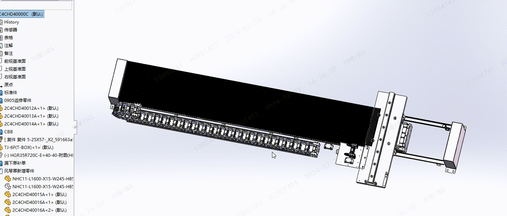
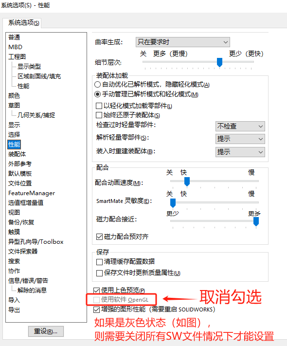

模型线条加载慢
模型线条加载慢，这种情况通常是软件设置勾选【系统选项-性能-OpenGL】导致，一般OpenGL是利用了CUP做显卡显示，这在SW软件里的优化是比较差的。会出现如下的情况：
方法 1：关闭OpenGL
方法 2：检查显卡启动
如果不能关闭关闭OpenGL。英伟达的显卡在打开软件时可以选择是：集显打开（错误），还是独显打开（正确），可右键软件程序检查。
方法 3：检查显卡驱动
如果不能关闭关闭OpenGL。请检查您电脑的显卡情况是否使用正常。特别是重装系统的电脑因缺少显卡驱动导致“只能打开OpenGL显示模式”。